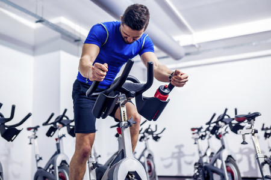
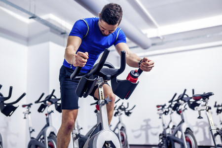

NOT JUST A FITNESS COMPANY
 

Our main objective is to provide health and well-being to people regardless of their lifestyle, age, or habits that they may have had until now, with that purpose muscle & fitness was born in 2015 to create a community of different people with a common goal, that of be better athletes and better people, adapt to new challenges, leave the comfort zone, and ultimately grow as athletes and as a person. With more than 50,000 active members, we are a benchmark fitness chain in the sector, and with the prospect of continuing to grow. In this new year we foresee a 200% expansion of our business, with the motivation and clear objective of continuing to help thousands of people to pursue their goals, always hand in hand with muscle & fitness.